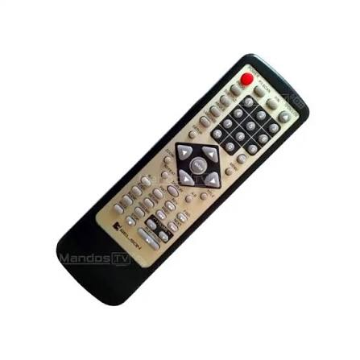
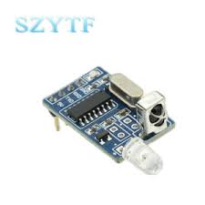
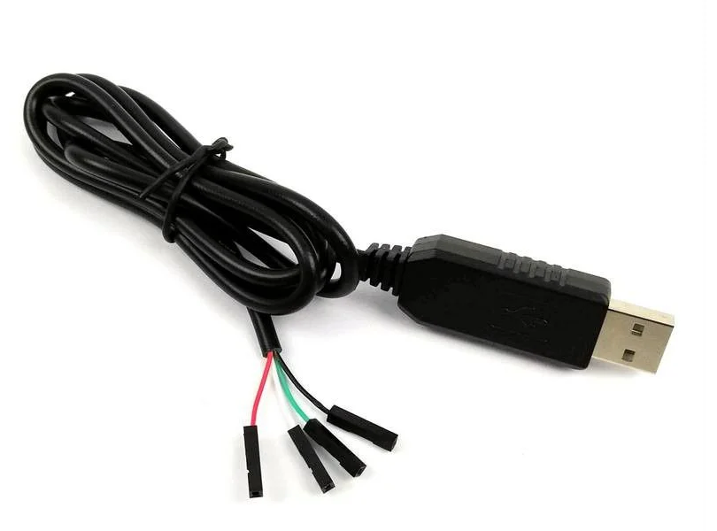

Project Overview
Hey folks! How are you doing?
First of all, sorry for deleting my blog without any sense: ://wordpress.com...
So I'm back to upload some cool projects which most of schools would freak it out.
Thanks to some of my friends I discovered a nice library (inpout32.dll) compatible with Windows. This library can be installed so its functions could be used under the IDE called Borland C++ 6.0.
The applications built with this IDE can also be executed under Linux Operating Systems with Wine.
The sources of my work are for free and you could download it just at the bottom of this site.
🔧 Need Borland C++ 6.0 to compile?
💿 Get IDE on WinWorldScreenshot (Widescreen Format)

Demonstration Video
🚀 Ready to explore the code?
📦 Download Source Code (.ZIP)PRO Acquisition Data Card

LDR Motor Control
Simulate real-time variables and visual responses within the schematic workspace or watch the live demo.
Interactive Schematic


.png)
LDR Current 0mA
0
Hardware Demo Video
Mouse Pointer IR Control
Control your system's mouse pointer using infrared signals and vintage hardware hacking.
Hey my friends! Here it is an awesome project that I've been developing since 2019.
The beginning of the project was the automatization of simple tasks under Windows. However, due to the nature of my job at the time, I couldn't even save those auto-tasks. This led me to believe that these kinds of development projects are often rejected in the South of Spain, or maybe even all around the world.
One day, I threw away a non-working DVD Player but I preserved its Remote Control. Within a few days, I noticed that I could easily recycle it!

Back then, I started decoding IR signals with a 3-pin IR Receiver. I still remember the mnemonic rule for the schematics pinout: "Salgo del Hospital, pongo los pies en la Tierra y me alimento" (Output, GND, and Vcc), read in that exact direction from left to right.
After some weeks programming in C++, I discovered a nice IR Decoder from the Vishay manufacturer. I also found a convenient cable: a USB-TTL to RS232 COM Port adapter.
I finally freaked out when I saw how these magnificent parts (Decoder + Cable) worked straight out of the box with a simple C++ application, reading the inputs of the remote control function signals.
Obviously, I was supported by the UPV.net community, as the COM port cannot be addressed—and even less read—without the cool library implementation owned by that great university (Politechnical University of Valencia). I attached that "applet", which is very easy to install on Borland C++ with this step-by-step guide:
🔗 Official ComPort Installation Guide
📖 View Guide on UPVAfter a few weeks testing the IDE and doing hundreds of consultations on Google, I finally managed to control the Mouse Pointer with my custom C++ application.
Hardware Components

Vishay Device

USB Adapter
The Modern Era & Java Build
Nowadays, there are stunning Remote Control devices featuring compatibility with 64-bit machines. With a few adjustments, you can even get a cool "Wii-Motion" IR Remote Control without any cables needed—just switch it on and pair it via Bluetooth.
Anyway, I also built a 64-bit compatible Java version of the project:
Linux Mint Accessibility & Video Demo
In the middle of these builds, I was deeply thanked for embedding this system into an Accessibility Project. Nowadays, we can control the mouse pointer of our computers simply by activating the corresponding "Accessibility" option in the Mint branch of Linux!
Check out the live system reaction in the video player on the side.
Support & Donations
If you like these projects, consider supporting my work.
Support TeraHertz Projects
Your support helps maintain the site online and funds new open-source hardware and accessibility research designs.
payments@d2ac.org